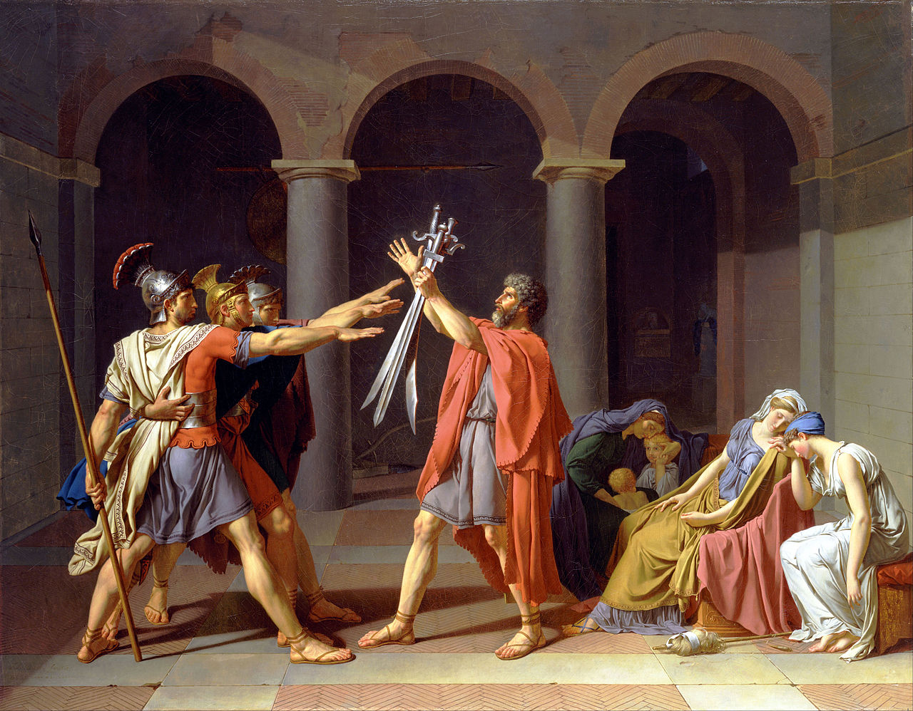
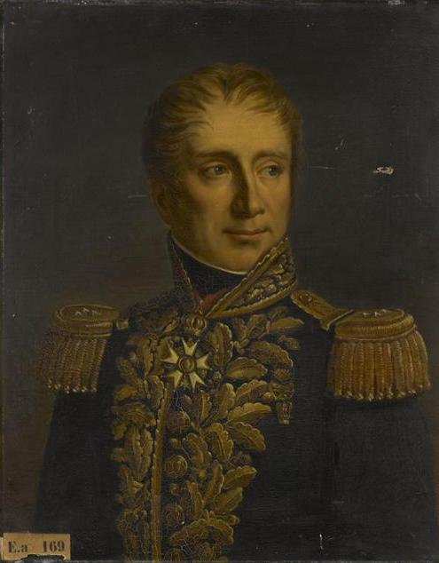
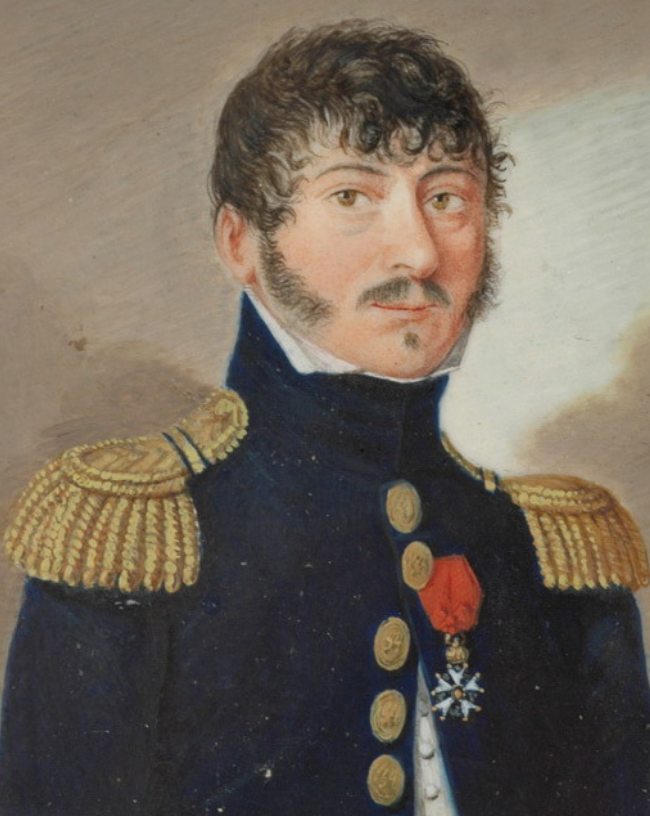
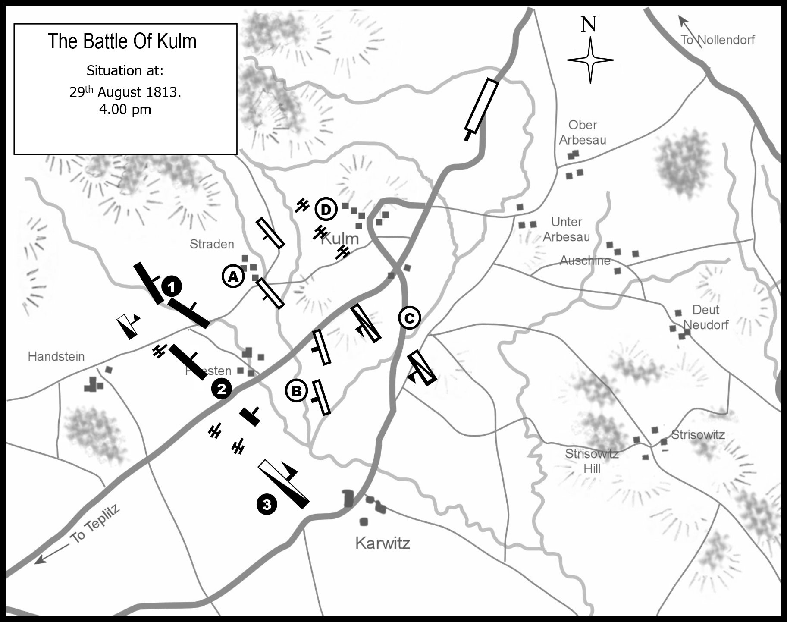
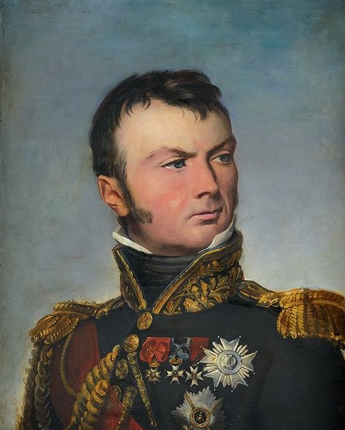
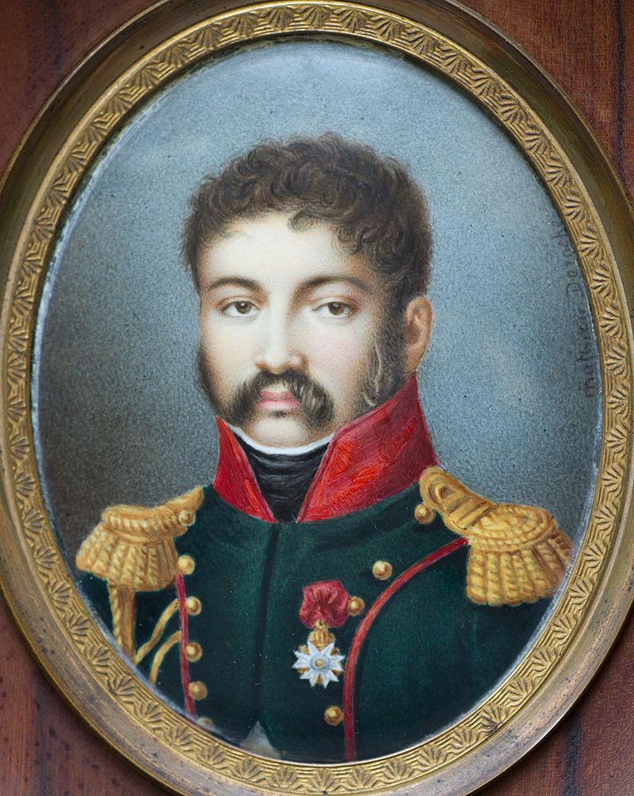
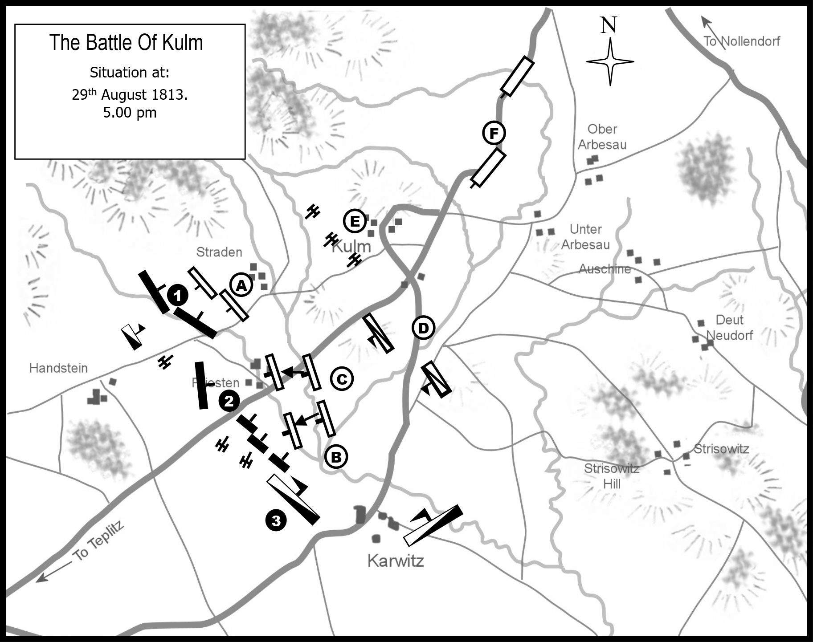

쿨름 전투 (4) - 호라티우스 삼형제의 교훈
게시: 2024-05-27T06:30:42+09:00
여기서 잠깐 명화 하나 감상하고 가시겠습니다.

(호라티우스 삼형제의 맹세라는 유명한 그림입니다. 나폴레옹 궁정화가였던 다비드의 그림입니다. 고대 로마식 경례법을 보여주고 있는데, 악명 높은 나찌 경례법이 바로 여기서 나왔습니다.)
이 그림은 로마 시대의 그리스 출신 역사가인 리비우스(Livius)의 책에 나오는, 초기 로마 왕정 시절 호라티우스 삼형제에 대한 유명한 이야기를 그린 것입니다. 약간 긴 이야기를 짧게 요약하면 이웃 도시와 분쟁이 생기자 호라티우스 삼형제와 이웃 도시 국가의 쿠리아티우스 삼형제가 3대3 대결을 벌여 승부를 가른다는 내용입니다. 그런데 승부의 내용이 상당히 전술적입니다.
대결 초반, 쿠리아티우스 삼형제가 우세를 점하여, 호라티우스 형제들 중 2명이 죽어버립니다. 쿠리아티우스 형제들 중에도 부상자가 있기는 했지만, 3대1로는 전혀 승산이 없다고 생각한 홀로 남은 호라티우스는 꾀를 내어 광장을 가로질러 도망쳐 달립니다. 그러자 쿠리아티우스 형제들이 그를 뒤쫓아 달렸는데, 그 중 부상 없이 멀쩡하던 사람이 가장 먼저 호라티우스에게 접근했습니다. 그러자 호라티우스는 재빨리 되돌아서서 1대1로 대결을 벌였고, 곧 그를 죽일 수 있었습니다. 이어서 뒤를 쫓던 가벼운 부상을 입은 두번째 쿠리아티우스도 1대1로 싸워 죽였으며, 가장 큰 부상을 입어 뒤를 쫓지 못하던 마지막 쿠리아티우스도 간단히 죽였습니다. 이건 전투에 있어서 병력의 축차투입이 얼마나 치명적인 결과를 낳는지 잘 보여주는 예입니다.
이 이야기를 갑자기 하는 이유는 아래 설명할 방담 휘하 코르비노 장군의 별명이 '호라티우스 삼형제'이기 때문이기도 하지만, 방담의 신세가 그 쿠리아티우스 형제와 비슷했기 때문입니다. 지난 편에서 언급했듯이, 방담도 러시아군의 방어선에 병력을 축차투입해야 했던 것입니다.
결국 제1군단 3만5천 병력이 다 도착할 때까지 기다리지 못한 방담은 당장 가용한 병력을 이용하여 러시아군 방어선의 좌익인 스트라덴(Straden), 그리고 중앙인 프리스텐(Pristen) 마을을 공격했습니다. 결과는 당연히 신통치 못했습니다. 방담의 병력들은 대부분 몇 개월 전에야 처음 머스켓 소총을 쥐어본 신병들이었던 것에 비해, 방어선을 구축하고 기다리던 러시아군은 대부분 러시아 근위대 소속의 정예 병력이기 때문이었습니다. 두어 차례 돌격을 감행하여 꽤 많은 사상자만 내고 아무런 성과를 못 거둔 방담은 오후 2시30분 경, 필리퐁(Armand Philippon) 장군의 제1사단이 클룸에 도착하자 이번엔 좀더 체계적으로 합동 작전을 펼칠 수 있게 되었습니다. 그는 오후 3시, 먼저 30분 정도 스트라덴과 프리스텐 마을의 방어선에 집중 포격을 가해 부드럽게 만든 뒤에, 오전 공격에 참여했던 르베(Jean Revest) 장군과 무통-뒤베르네(Régis Barthélemy Mouton-Duvernet) 장군의 사단들과 함께 필리퐁 사단을 한꺼번에 투입했습니다.

(무통-뒤베르네 장군입니다. 그는 나폴레옹보다 2살 연하였고, 원래 14살 때 사병으로 입대하여 카리브해의 프랑스 식민지에서 복무하다 프랑스 대혁명을 맞아 귀국하여 혁명에 가담한 사람이었습니다. 그는 나폴레옹의 출세 계기가 되었던 1793년 툴롱 포위전에도 참전했고, 특히 나폴레옹이 악전고투를 벌였던 1796년 이탈리아의 아르콜레 다리 전투에서 두각을 발휘하여 대령 계급을 달았습니다. 그러나 이후 승진은 빠르지 않았고, 1811년에야 준장이 된 뒤, 소장으로 진급한 것은 1813년 여름의 휴전이 끝날 무렵인 1813년 8월이었습니다. 그는 부르봉 왕가 복위 이후 발랑스(Valence) 주지사로 임명되었는데, 나폴레옹의 백일천하 때 나폴레옹에게 붙었습니다. 그러나 나폴레옹이 다시 폐위된 이후 부르봉 왕가에 의해 반역자로 지목되어 재판을 받고 총살되었습니다. 왜 누구는 총살되고 누구는 용서를 받았는지는 나중에 따로 알아봐야겠습니다.)

(필리퐁 장군입니다. 나폴레옹보다 8살 연상이었던 그는 17살 때 사병으로 입대하여 매우 평범한 졸병 생활을 했고, 꽤 긴 세월인 8년 후에야 부사관이 되었습니다. 그러다 대혁명이 발발한 뒤 3년 뒤인 1792년에 대위로 갑자기 선출되었는데, 이후에도 이런저런 작은 전투 및 조용한 전장에서 조용히 경력을 쌓았습니다. 그러다 스페인 전장에서 복무를 시작하면서 두각을 드러내어 1810년에야 준장으로 승진했고, 특히 1812년 스페인을 침공하는 웰링턴의 맹공을 3주간이나 막아낸 바다호스(Badajoz) 요새 전투에서 큰 명성을 얻었습니다. 결국 포로가 되어 영국으로 이송된 그는 군인의 명예를 믿고 가석방 시켜준 영국측의 배려를 버리고 불과 몇 달만에 영국을 탈출, 밀수선을 타고 프랑스로 돌아왔습니다. 그는 무통-뒤베르네와는 달리 백일천하 이전에 깔끔하게 군에서 전역했고, 덕분에 조용히 살다 74세로 천수를 누리고 갔습니다.) 이렇게 오전부터 러시아군의 좌익과 중앙만 집중적으로 두들겨 팼음에도 불구하고, 러시아군은 매우 완강하게 저항했습니다. 몇 차례나 러시아 병사들이 견디지 못하고 방어선이 무너져 내리는 듯하였으나, 그때마다 후방의 예비대가 즉각 투입되어 다시 프랑스군을 밀어냈습니다. 물론 러시아군도 피해가 매우 컸고, 이 오후 공격의 결과 러시아군의 예비대는 이즈마일로프(Izmailovsky) 근위 연대의 3개 대대 중 딱 2개 대대만 남을 정도였습니다.

(8월 29일 오후 4시의 전투 상황도입니다. 오른쪽 위가 프랑스군, 왼쪽 아래가 러시아군입니다. 이때도 카르비츠 마을에는 강한 압박이 없는 것을 보실 수 있습니다.)
그나마 오후의 첫공격을 막아낸 뒤에도 프랑스군이 다시 공격할 태세를 취하자, 중앙의 프리스텐 마을을 방어하고 있던 뷔르템베르크 대공은 예비대를 지휘하던 예르몰로프(Alesksei Ermolov) 장군에게 남은 2개 대대까지 내놓으라고 요구했습니다. 그러나 예르몰로프 장군은 이를 거절했습니다. 젊은 뷔르템베르크 대공이 언성을 높이며 따지자, 말다툼을 벌이던 예르몰로프 장군은 급기야 벌컥 화를 내며 이렇게 외쳤다고 합니다. "대공께서는 독일인이라서 러시아 근위대가 다 죽어버려도 상관하지 않겠지만, 폐하의 근위대를 조금이라도 살려 놓는 것이 내 의무요!"

(예르몰로프는 황소처럼 생긴 사내라고 하더니 정말 황소처럼 생겼습니다. 그는 25세의 젊은 독일 귀족 뷔르템베르크 대공이 나대는 것이 아니꼬왔을 수도 있습니다만, 실은 그의 나이도 당시 36세로서 그닥 많은 나이는 아니었습니다. 그는 보로디노 전투에서 잠시 빼앗겼던 라에프스키 보루를 탈환하는 등 맹활약했었습니다.) 그런 상황에서도 뷔르템베르크 대공은 포기하지 않고 총사령관인 오스테르만을 찾아가 그를 설득, 결국 예르몰로프로부터 이즈마일로프 근위 연대의 잔존 병력을 모조리 빼앗아 왔고, 이 병력을 갈아넣어 오후 4시에 다시 쳐들어온 프랑스군을 결국 물리쳤습니다. 오전부터 거듭된 혈투로 모든 병력이 탈진해버렸음에도, 마음이 급했던 방담은 오후 5시 경에 다시 한번 최후의 카드를 던집니다. 그 사이에 또 조금씩 산길에서 내려와 도착한 부대들을 규합하여, 여태까지는 건드리지 않았던 러시아군의 우익, 즉 카르비츠(Karwitz) 마을에 투입한 것입니다. 여기에는 일부 러시아군 보병들과 함께 대부분의 기병대가 배치되어 있었는데, 당연히 기병들이 달려나와 프랑스군 보병들을 위협했습니다. 바로 이때 방담의 승부수가 펼쳐집니다. 여태까지 아껴두었던 코르비노(Jean-Baptiste Juvénal Corbineau) 장군 휘하의 프랑스군 기병대를 투입한 것입니다. 여태까지 힘을 비축하고 있던 프랑스군 기병대는 활발하게 말을 달려 기진맥진해진 러시아군을 압도하는 듯 했습니다.

(장 코르비노 장군입니다. 나폴레옹보다 7세 연하였던 그는 귀족은 아니더라도 그럭저럭 괜찮은 집안 출신이었는지, 혁명이 발발 3년 뒤인 1792년 16세의 나이로 곧장 기병대 소위로 군생활을 시작했습니다. 그는 삼형제 중 두 번째였는데, 그의 형인 클로드(Claude)와 동생인 에르큘(Hercule)도 모두 장교로 혁명군에 가담했습니다. 덕분에 고대 로마 왕국의 호라티우스 삼형제와 비유되어 그 삼형제는 사람들에게서 'les trois Horaces' (호라티우스 삼형제)로 불렸습니다. 훗날인 1840년, 아직 루이 나폴레옹이던 나폴레옹 3세가 영국에서 돌아와 2번째 쿠데타를 일으키려 할 때 그를 체포한 것이 바로 이 장 코르비노입니다.)

(결론적으로는 호라티우스 삼형제 중 하나만 남고 다 죽었으니, 코르비노 형제들을 'les trois Horaces'라고 불렀던 것은 매우 불길한 별명인 셈입니다. 실제로 맏형인 클로드 코르비노는 1807년 아일라우 전투에서 전사했고, 다행히 나머지 두 형제는 살아남았습니다. 다만 동생 에르큘도 1809년 바그람 전투에서 대포알에 오른쪽 다리를 잃었습니다. 그런데 그는 이후 이야기가 더 흥미진진합니다. 그는 그 전투에서 부상당한 자기를 구하다가 함께 다리를 잃은 친구와 하필 한 여자를 두고 연적이 되어 버린 것입니다. 두 친구는 사랑 앞에서는 절대 양보하지 않고 다투다가 결국 결투를 벌이기로 했는데, 결투 직전에 에르큘은 권총을 버리고 '도저히 생명의 은인과 결투를 벌일 수가 없다'라며 여자에게 둘 중 하나를 택해달라고 간청했습니다. 결국 여자는 에르큘을 택했고, 이 둘은 결혼하여 아들 딸 하나씩 낳고 잘 살았답니다. 결국 해피엔딩입니다.) 그러나 이 회심의 한방마저 처참한 실패로 끝나고 말았습니다. 그때 때마침 러시아 근위기병대가 다른 산길을 넘어 오스테르만의 기진맥진한 러시아군 뒤편에 나타나 합류했던 것입니다. 새로 가세한 근위기병대가 가세하자, 역시나 모두 신병이었던 코르비노의 프랑스 기병대는 버티질 못하고 밀리기 시작했고, 또 다른 산길을 통해 넘어온 러시아군 창기병대가 측면에서 또 나타나자 버티지 못하고 우르르 무너지고 말았습니다. 결국 얼츠비어거 산맥을 넘는 길은 아주 많았던 것입니다. 이렇게 러시아군과 프로이센군 부대들은 동맹국인 오스트리아 보헤미아인들의 협조를 매우 잘 받았고, 덕분에 현지인들의 길 안내로 샛길을 잘 이용할 수 있었습니다.

(오후 5시, 다시 한번 공격을 가하지만 지도 중앙 아래의 카르비츠 마을 남서쪽과 남동쪽 양측면에서 러시아 기병대가 뛰어나오며 프랑스군의 공격은 분쇄되고 맙니다.)
결국 8월 29일의 전투는 이렇게 방담의 거센 공격을 오스테르만이 힘겹게 막아내는 것으로 마무리되었습니다. 이 날 전투 거의 마지막에 오스테르만 본인이 프랑스군의 대포알에 왼팔을 직격당해 실려가기는 했지만, 그게 전체 전황에 큰 영향을 주는 것은 아니었습니다. 하루 종일 치열하게 치러진 전투에서, 방담의 병력 3만5천 중 2만9천이 참전했고 그 중 약 5천이 사상자로 전선에서 이탈했고 약 6백이 포로로 상실되었습니다. 밤사이에 계속 산길을 넘어온 병력까지 합하면 방담에게 남은 병력은 2만8천 정도였습니다. 러시아군의 피해도 극심했습니다. 오스테르만의 병력 1만5천 중 그날 하루에만 5천이 사상자로 사라졌습니다. 특히 그 중 거의 3천이 정예 병력인 근위대였습니다. 그러면 이제 러시아군에게 남은 것은 1만이었을까요? 아니었습니다. 코르비노 장군의 기병대를 무찌른 러시아 근위기병대처럼, 그날 오후부터 다른 산길을 통해 넘어온 러시아군이 꽤 많아서, 러시아측 병력은 오히려 2만으로 보강된 상태였습니다. 이렇게 적군이 계속 증강되는 것을 뻔히 보고 있던 방담은 속이 타들어갔습니다. 이때 여러분이 방담의 처지라면 어떻게 하셨겠습니까? 방담의 운명을 알고 있는 우리는 차라리 재빨리 후퇴를 하든가 했어야 한다고 방담을 비난할 수 있습니다. 그러나 당시 방담은 그럴 수가 없었습니다. 일단 아직까지도 방담은 나폴레옹의 본대가 뒤를 바싹 따라오고 있을 것이라고 믿고 있었습니다. 그리고 눈 앞의 적은 아직도 자신의 제1군단보다 훨씬 병력 수가 적다는 것이 객관적인 평가였습니다. 전제적인 전황도, 연합군이 드레스덴 전투에서 패배하고 도망치는 중이었고, 나폴레옹이 그 뒤를 쫓아 보헤미아로 밀고 들어가는 상황이었습니다. 그런 상황에서 자신이 거느린 병력의 절반도 안 되는 러시아군을 뚫지 못했다고 해서 왔던 산길로 다시 꽁무니를 뺀다는 것은 매우 쉽지 않은 결정이었습니다. 방담은 밤에 잠이 오지 않았을 것입니다. 8월 30일 날이 밝자, 밤새 고심하던 그는 오전 6시 30분 나폴레옹에게 보내는 보고서를 작성했습니다. 그 내용은 무엇이었을까요? Source : The Life of Napoleon Bonaparte, by William Milligan Sloane Napoleon and the Struggle for Germany, by Leggiere, Michael V With Napoleon's Guns by Colonel Jean-Nicolas-Auguste Noël https://www.pinterest.co.uk/pin/143059725653536439/ https://napoleon-monuments.eu/Napoleon1er/Vandamme.htm https://alchetron.com/Battle-of-Kulm https://en.wikipedia.org/wiki/Battle_of_Kulm https://battlefieldanomalies.com/napoleonic-wars/the-battle-of-kulm/ https://en.wikipedia.org/wiki/Armand_Philippon https://en.wikipedia.org/wiki/R%C3%A9gis_Barth%C3%A9lemy_Mouton-Duvernet https://en.wikipedia.org/wiki/Jean_Corbineau https://en.wikipedia.org/wiki/Horatii_and_Curiatii https://www.frenchempire.net/biographies/corbineau2/ https://en.wikipedia.org/wiki/Hercule_Corbineau